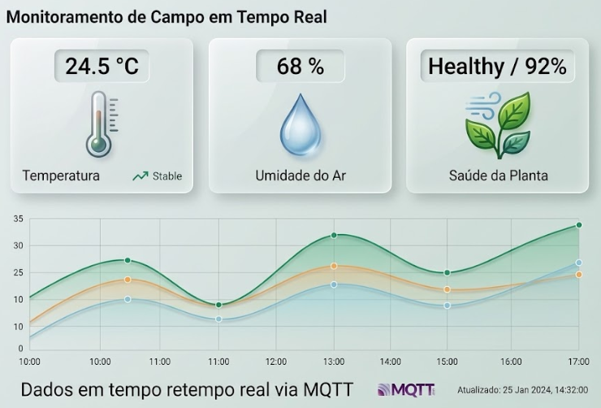

🎯 Objetivo
Este projeto tem como objetivo desenvolver um sistema de monitoramento ambiental em tempo real utilizando um microcontrolador ESP32, capaz de medir temperatura, umidade relativa do ar e qualidade do ar de um ambiente. Os dados coletados são publicados em um broker MQTT (Mosquitto) e exibidos em um dashboard web responsivo, permitindo o acompanhamento remoto e em tempo real das condições monitoradas.
